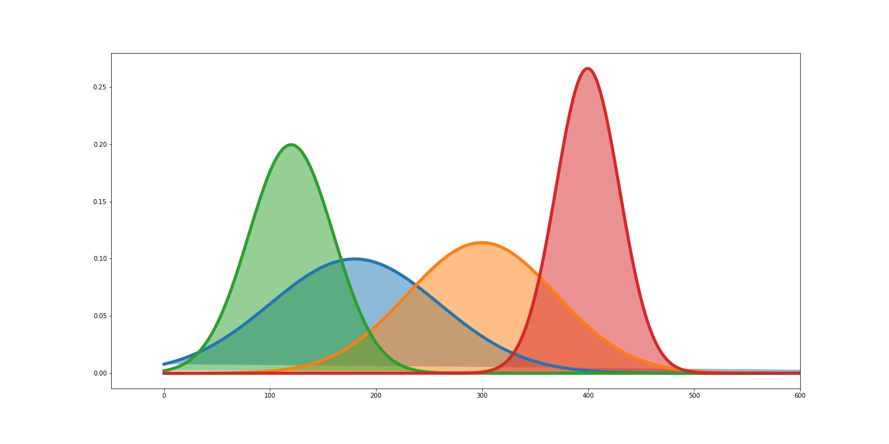

AI enabled Social Distance Monitoring with smart notifications
A Computer Vision algorithm enabled solution for a safer Australia with automated distance monitoring
to ensure social distancing initiative. The solution utilizes IoT cameras OR existing CCTV infrastructure to
monitor and smartly notify people count, density at a designated area and send alert of breaking of social rules in enclosed OR
outdoor area.
Advantages
Real-time measurements of people count and pairwise distance
Automatically setting the number of people allowed in a specific area
Real-time notifications and alerts when rules are broken
Integrate existing IoT devices in a plug and play fashion
Real-time Dashboard monitoring with people heatmap with automated periodic reporting
Push notification to any stakeholder exploiting the queing service
Plug new Camera and play in a new zone
Functionalities
Complete Cloud based solution with minimal human monitoring
A platform that can be used in indoor OR outdoor arena OR both
A complete soution to find the hindsight, insight and foresight
Extend monitoring zone easily with minimal cost efficiently
Location based alarm system integrated with camera
Fast to deploy, configure, and use in automated orchestration
Video Feeds
Camera Feed 1
Camera Feed 2
Camera Feed 3
Camera Feed 4
Camera Feed 5
Camera Feed 6
Social Distance Monitoring Dashboard
(Current People Count in the arena: 35)
People Denstity Heatmap in the arena
Social Distance Distribution among Genders
Social Distance Monitor

People Count in last 24 hours
People Count in last 2 weeks in the arena
Distance among people (Voronoi)
Technology Stack
AI
IoT Camera
Intel OpenVino Toolkit for Edge Computing
Edge enabled optimized Deep Learning Algorithm
Cloud Service
Message Queue Services
Cloud Database
Front End System using React Native JS
Embedded system with alarm notification
What we want to do in future?
What you will see?
Real-time dashboard with insights and suggest actions using ML
Historical data analysis and find user pattern
Live heatmap of people density in a designated area